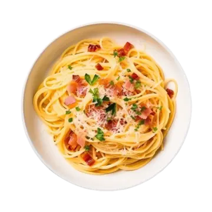

Spaghetti Carbonara
A classic Italian pasta dish made with eggs, cheese, pancetta, and pepper. Creamy, delicious, and ready in under 30 minutes.
Ingredients
- 200g Spaghetti
- 100g Pancetta (or bacon)
- 2 Large Eggs
- 50g Parmesan Cheese (grated)
- 2 Cloves Garlic (minced)
- 2 tbsp Olive Oil
- Salt & Black Pepper to taste
Instructions
- Cook the spaghetti in salted boiling water until al dente.
- Meanwhile, fry pancetta with olive oil and garlic until crispy.
- In a bowl, whisk eggs with grated Parmesan and black pepper.
- Drain the pasta (reserve some pasta water), then add to the pan with pancetta.
- Remove from heat, stir in egg mixture quickly to avoid scrambling.
- Add a splash of reserved pasta water if needed for creaminess.
- Serve hot, topped with extra Parmesan and pepper.